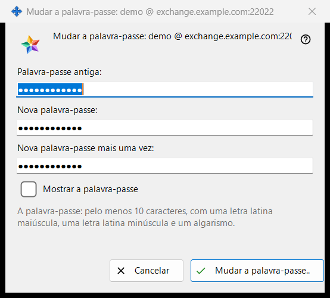
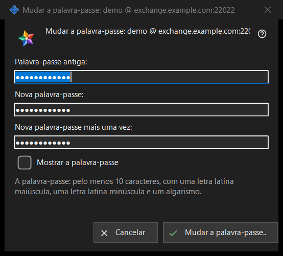

Mudar a senha
Finalidade
Muda a senha da conta de troca em que este PC entrou. A janela se abre a partir de «Mudar a senha..» no grupo «Conta de troca» das configurações do Share Manager, um botão que só aparece enquanto a conta está conectada. O título da janela nomeia a conta como nome de usuário @ servidor. A janela não envia nada sozinha: verifica o que você digitou e o devolve, a conexão deste PC o envia, e a última palavra é do servidor.


Nesta ordem
- Nas configurações do Share Manager, procure o grupo «Conta de troca» e clique em «Mudar a senha..».
- Digite a senha antiga em «Senha antiga:».
- Digite a senha nova em «Nova senha:» e repita-a em «Nova senha mais uma vez:».
- Marque «Mostrar a senha» para verificar os três campos.
- Clique em «Mudar a senha..»; se aparecer uma linha de aviso, corrija o campo e clique de novo.
- Leia a resposta mostrada no grupo.
Os elementos
Os três campos
A senha antiga, a nova e a nova repetida. Os três estão mascarados; a única marca «Mostrar a senha» os revela em conjunto e não é memorizada. Os campos são esvaziados quando a janela se fecha.
A regra da senha
A linha abaixo dos campos diz: «A senha: pelo menos 10 caracteres, com uma letra latina maiúscula, uma letra latina minúscula e um dígito.» A janela a verifica de imediato, por isso recebe uma resposta antes de ser enviado o que quer que seja.
A linha de aviso
O botão verifica nesta ordem: «Indique a senha antiga.», «As duas senhas não coincidem.», e depois a regra: «A senha tem menos de 10 caracteres.», «A senha não tem uma letra latina maiúscula.», «A senha não tem uma letra latina minúscula.», «A senha não tem nenhum dígito.». O primeiro problema interrompe a verificação, a janela fica aberta e nada é enviado.
O que acontece depois de clicar
Uma entrada válida fecha a janela e o grupo mostra a resposta. Êxito: «A senha mudou. Este computador continua funcionando, e os outros dispositivos da conta precisam entrar novamente.» Outras respostas: «A senha antiga não estava correta.», «Muitas tentativas. Aguarde um minuto e tente novamente.», «O servidor recusou a mudança da senha.» e «Não há conexão com o servidor. Conecte-se e tente novamente.». Quando o servidor rejeita uma senha fraca, é mostrada a sua própria frase.
Cancelar e teclas
«Cancelar» ou Esc fecha a janela e não altera nada; Enter aciona «Mudar a senha..».
Configurações do gerenciador · Configurações de compartilhamento SFTP · Configurações do servidor de troca